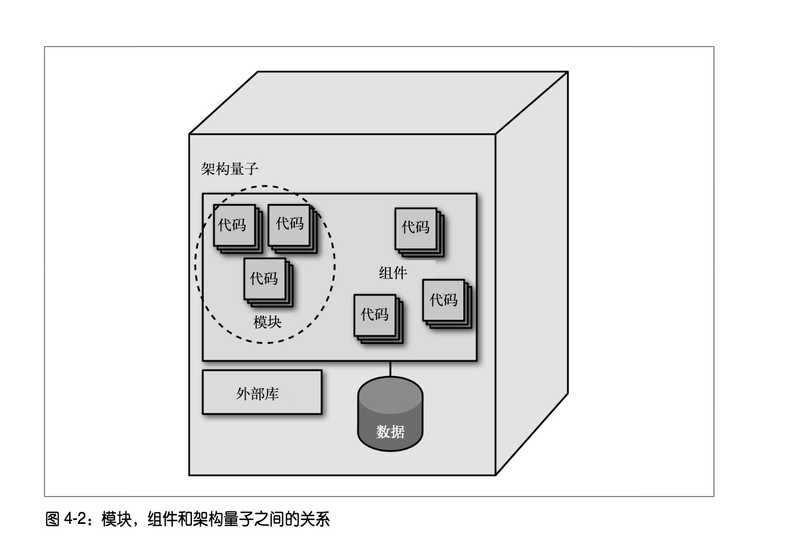
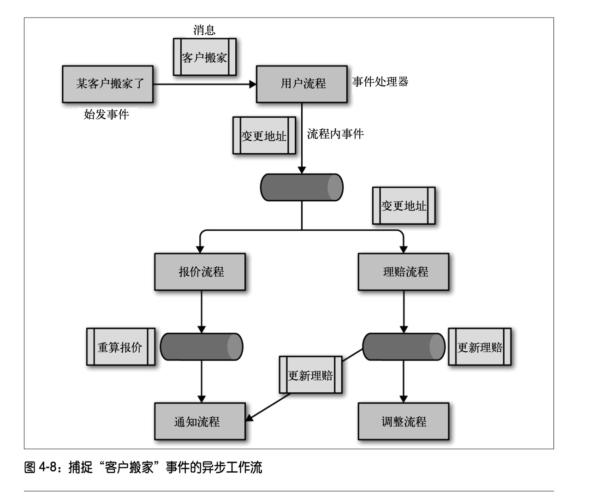
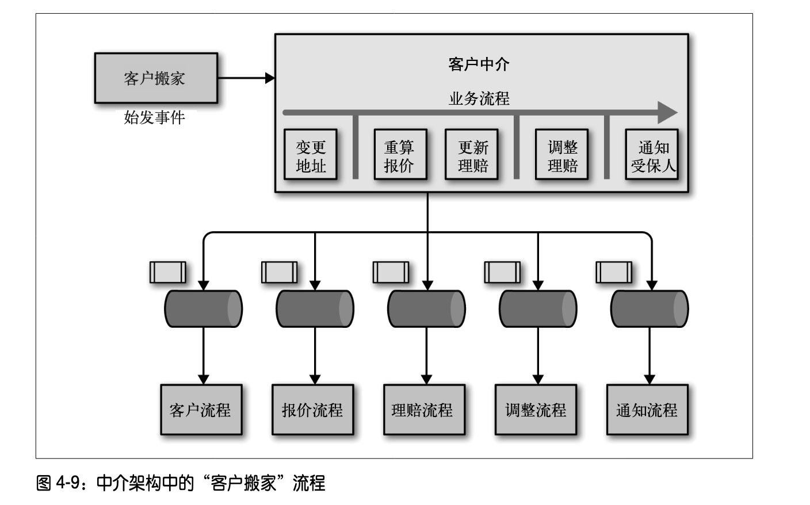
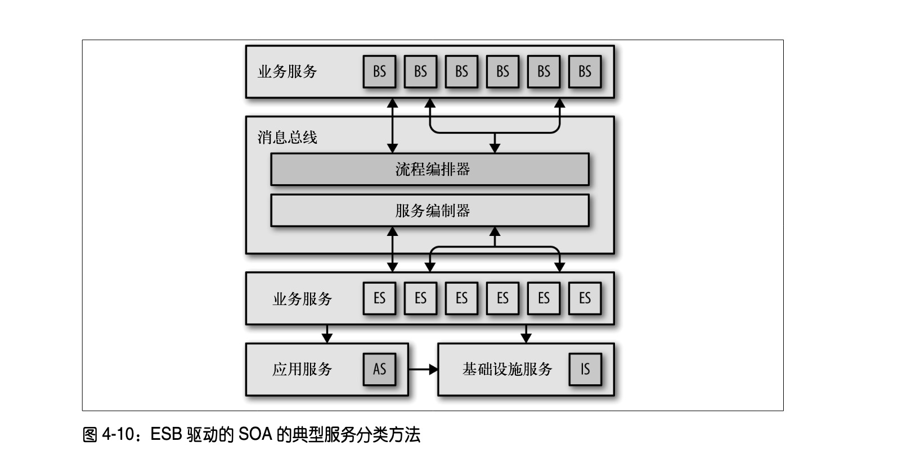

演进式架构
如果读一本书，没有附带正确的复盘（提出反馈并总结反馈），则浪费了这次读书的完整机会。
复盘需要经过痛苦的思索，把一些之前自己没有办法充分接受的观点，充分接受。
本书是一本讲战略的书。
这本书告诉我们很多概念，一旦加上“架构”前缀，突然就有了特殊的含义：架构特征（architectural feature）、架构量子（architectural quantum）、架构维度（architectural dimension）、架构模式（architectural pattern）。
新时代的架构愿景-怎样用敏捷的方式来拥抱变化？
架构难以被修改是由架构本身的不变性决定的，架构天然就是难以修改的。
有些人可能认为，就好像建筑业的实践那样，应该先完成这类架构设计，再开始开发。但需求是快速变动的这一事实告诉我们，我们可能要经常修改我们架构，以拥抱需求变化。
“需求总是在动态变化的”，比“架构应该是被预先确定”，更加像是一个事实（后者更加像是一个观点）。
当代的架构是：
- 不断努力的结果
- 【能够响应不断变化的需求和外部人员的反馈】
实施这种架构以替代传统架构，是需要决策者（技术领导者或者架构师）展现技术领导力的。
这种架构的关键只有一个：采取小步变更。这是所有的敏捷团队长期以来一直都已经在实践中执行的动作（实践在此刻先于理论）。但让响应式架构的小步变更不同于其他敏捷实践的一些其他特征还有：要综合运用一些现代交付技术的进步，来帮助演进式架构可控而灵活地演进，这些技术包括：持续交付（最重要的是，它所带来的流水线技术）；以及对架构状态的监控-适应度函数（fitness function，这个概念是被演化计算率先引入计算机科学中的，在工程实践中被广泛运用，也有翻译作健康度函数的。遗传算法用它来定义“何为成功”）。
软件是 21 世纪最重要的东西，我们必须学习以更好的姿态来应对变化。
架构的范围与定义
何为演进式架构
架构的范围且内涵是不断变化的，开发人员唯一知道的事情是，“重要的东西”（必须早期就做出的，不易变动的决定）是软件架构。
架构师设计架构时要考虑的第一个因素，是业务需求（在这里我们可以把业务需求当成领域需求来看，甚至可以把领域需求当作一个通用词），但业务需求还要搭配大量的其他因素：安全性、可伸缩性。实际上本书罗列了高达 75 种架构特征。架构师只能考虑有限个（此处的有限个是指比 75 少得多的数量）特征，而且必须在矛盾的架构特征之间取得平衡，有所牺牲，有所折中。
随着时间的推移，我们的架构要演进，但我们又要保护重要的架构特征。所以演进式架构尝试告诉我们：要用一种新的方式思考架构和时间，引入持续架构（即没有终态的架构）。
在没有演进式架构的思想以前，为未来做战略性规划，就已经是架构师都喜欢做的事。除非因势利导，否则不断变化的软件开发环境会让规划非常难做，很难做得准。
向高度动态的系统引入（单一维度的、极致优化的）变化，容易产生无法预料的结果（下文会提到，这个叫比特退化）。引入一项变化可能会导致旧的平衡被打破，新的平衡出现。
持续交付是一项重大改进，它让过去孤立的功能（如运维）合并到了软件开发的生命周期里，让对软件的改进变得更加可控。
技术发展也让以前我们在架构设计的时候，必须考虑的问题变得无足轻重了。比如以前编程的时候，共享资源的效率是必须重点考虑的问题。而在现代的软件架构里，架构师只要考虑怎样合理地运用云，就自动获得了更高的效率-运维问题也可以同理解。
预测变化是很难的，而软件架构真的是“难以变更的部分”吗？这类自证式的预言带来的结果是：因为架构师认为架构是难以变更的，所以倾向于不变更架构，于是架构真的是难以变更的了。如果我们改用“易于改变”的原则来看待架构，我们可以期待出现一组全新的架构行为出现。
很遗憾，架构有时候不仅难以变更，而且还可能出现“比特退化”的情况。架构师有可能选择特定的架构模式来满足业务需求，突出某类能力。但这种设计很容易退化，比如，很多开发人员会绕过分层，破坏架构风格，无分层，则所有隔离变化的设计都会逐渐消失。所以这引入一种架构师的思维模式：我们只能选用一种架构模式或者风格，或者使用某些特定的组件，来保证架构具有某些特征。
演进式架构拥有演进能力，否则不足以称为演进式架构。演进能力就是系统演进的时候保护其他架构特征（包括元特征和其他特征）的能力。
演进式架构的定义是：支持跨多个维度的引导性增量变更。
演进式架构的大白话定义：我们有一个架构，已经找到了若干个需要专门保护的架构维度上的架构特征，我们围绕架构特征定义了适应度函数，通过适应度函数指导我们做可控的变更，逐步引入新的功能，或者增强旧的功能。
何为增量式变更（incremental change）
增量式变更具有以下特点：
- 小范围
- 模块化
- 高度解耦
引导性变更（guided change）
适应度函数原本是用来评估某个算法是否能够达到我们的预期。在此处我们是用来表达，我们要有办法度量我们的架构特征，保护他们不随着架构演进而发生退化。
我们有多少种需要关注的架构特征，每个架构特征有多少种可用的适应度函数可用？
guided change 在这里其实指的是 fitness function driven development。为什么不叫适应度函数变更？
多个架构维度
软件架构是多维的，一个例子就是：现代软件架构需要考虑运维问题。
维度一定是正交的，常见的维度的例子是：技术、数据、安全、运维和系统。
我们每定义出一个架构维度，都要谨慎地选取适应度函数来保护这个架构维度的架构特征。
康威定律
康威定律告诉我们，一定我们开始划定边界来制造组织的团队，我们就是在制造沟通障碍（如果没有充分解耦的话）。按照职能划分团队，可以提高组件的交付效率，但不一定能提高端到端交付的特性价值。人很难改变其职责范围外的事情。康威定律告诉我们：团队变多，可选的方案反而变少。因此出现了“康威逆定律”，围绕服务边界来构建团队（服务边界可以按照领域划分）。后面我们还会谈到，要按照产品的生命周期，而不是项目的生命周期来制定规划。
三个组成部分
演进式架构由三个部分组成：
- 增量变更
- 适应度函数
- 适当的耦合
适应度函数
适应度函数不仅可以在遗传算法里定义何为成功，也可以在机翼制造领域定义具体的管理指标，使用在架构设计领域只是它的其中一个应用而已。“软件架构的适应度函数为某些架构特征提供了客观的完整性评估”。适应度函数提供了架构特征的保护机制。
性能和安全性经常是矛盾的，性能和伸缩性之间也经常需要权衡。-所以正交易于互补，易于互补的架构维度集是架构的核心特征。
我们可以从不同维度划分适应度函数：
- 全系统适应度函数=全系统的各个适应度函数的集合。这种集合并不只是加法效应起作用，也可能有乘法作用和减法作用起作用。集合是相互作用的产物。所以我们得到了原子适应度函数与整体适应度函数。
- 我们可以主动触发事件，使用触发式适应度函数；也可以构建一个持续监控系统运行的体系，收集真实的数据，使用持续式适应度函数。
- 我们的适应度函数使用的目标指标如果是预定好的，那就是静态适应度函数（我们通常理解的函数是这样的）；如果目标指标可以动态浮动，那就是动态适应度函数。
- 软件里，函数通常意味着可实现的东西，但适应度函数并不是：我们必须定义适应度函数来指导系统演进，但我们只能尽力让适应度函数自动化，有时候还是需要定义手动执行的适应度函数。适应度函数可能只停留在理念上。所以我们要区分自动适应度函数和手动适应度函数。有时候手动适应度函数表现更好，尽管它易出错，而且效率不高。
- 软件里很多变化不是持续发生的，而是偶尔发生的-比如库升级时，这时候我们需要运用临时适应度函数。
理想的情况下，我们应该尽早理解我们系统中最重要的架构特征，并为它构建适应度函数。这在通常情况下很难被简单做到。这需要架构者要么在这类架构里已经有了很长期的实践经验，要么要求架构者有很强的探索能力和判断力。没能提前确立适应度函数，意味着很多重要的关节点没法被把控，也就可能做出短期内看不到，长期看有问题的架构决策。
本文举了一个例子：如果能够尽早意识到安全是一个需要明确考虑处理的架构问题，那么可以尽早集中化地设计安全组件，而不让职责散落在架构中，要使用更高的成本来维护软件架构。
我们要对适应度函数有所取舍：
- 关键维度
- 相关维度
- 不相关维度
我们应该尽可能多地关注关键维度的问题，如果有必要，把这些适应度函数的执行结果放在最显要的地方，在可视化或者可关注的范围内优先重点处理这些架构维度的问题。
本文作者建议，引入年度会议来审查适应度函数，评估适应度函数是否合适。但在现实的组织中，恐怕没有多少人愿意承担这种流程性改进的职责，也不愿意被这些流程性改动所打扰。
Notes：
- 大部分人都不愿意构建适应度函数。
- 因为大部分人不愿意承担复杂测试的成本。
实施增量变更
在本处我们再次给演进式架构下了一个严谨的定义：
演进式架构是支持跨多个维度进行引导性增量变更的架构。
持续交付是 2010 年发布的工程实践，迄今已去 12 年。持续交付带来了如下变革：基于工具的自动化构建和发布软件的机制，让我们对软件的的生命周期得到了更深度的掌控，把开发运维连起来讨论。如果把演进式架构视为持续交付的延伸，则可以看到本书填补了理论的空白：
演进式架构能够支持增量变更，如何支持呢？
- 在开发方面如何 build 一个软件？
- 在运维方面如何 deploy 一个软件？
接着，作者举了一个 PenultimateWidgets 公司的例子：
如果要在服务中引入两个版本的 rating service，我们应该怎么设计我们的系统？
- 首先考虑把我们的各个服务都做成 MSA 的一部分，充分解耦。
- 引入服务发现工具，提供请求路由的功能，并对调用进行解耦。
- 发布新服务，依赖服务发现工具实现新旧服务的隔离。
- 当旧的服务依赖流量枯竭后，自动移除掉旧的依赖。
- 这些操作都在 pipeline 的支持下进行。
这已经是在大公司里很成熟的工作模式了，虽然我们没有把这种实践称作“增量变更”（正如我们虽然大量使用 pipeline，我们也不会强调我们在持续集成一样），但事实上增量变更要求的小范围、模块化、高度解耦，我们都可以通过微服务的一些实践来支持：如小颗粒度服务（组件化（Componentization ）与服务（Services））支持了小范围、模块化，而强化终端及弱化通道的服务发现机制，实现了任意的服务通讯调度，让解耦可控，如果加上云，我们还可以实现可伸缩的编排。
notes：有大量的问题实际上总是被大厂的团队所解决，只是我们不把它当作一个专门方法论的实践罢了。
构件
任何一个技术组件，都会有需要被升级的一天。我们的一个技术栈里，今天使用 jdbc，明天就可能使用 jpa。我们的架构能否承受住这种升级呢？架构可以用抽象的图表和方程来描述（这是错误的），但这种描述是抽象的，真正运行起来的应用服务，顶住服务运行后的问题，这才证明架构有生命力。
可测试性
难以被工具自动化支持的特性往往是容易被忽略的功能。
测试又是这其中最难、最繁琐，最需要框架支持的东西。相比执行严格的开发准则（伴随居高临下的说教），我们倾向于构建单元测试来捕捉架构违例。这样，开发人员可以专注于领域逻辑，而架构师可以把规范整合为可执行的构件。
不同的团队角色可能负责提出和维护某个方向的适应度函数，多个方向的适应度函数构成了我们的部署流水线。
部署流水线
在持续集成的实现里，持续集成要求持续集成服务器在构建的时候执行一系列（多得惊人）的任务。
多阶段部署鼓励开发者把更多的阶段编排进工程流程里，包括验证、测试和环境准备。在原本工程师们的印象里，部署流水线看起来只是持续集成里提到的一个工具，但现在部署流水线比持续集成更大，是内涵更广泛，囊括全生命周期的一个工具。事实上，美团的 devtools（前身为 pipeline）和腾讯的蓝盾流水线都呈现出现代的多阶段流水线的特点，每个流水线都可要并行或者串行若干个“插件任务”。
本文专门举了一个例子，说明复杂的部署流水线允许并行验证“当前环境的构建/部署”和“将来状态环境的构建/部署”。这种允许扇入-扇出执行的流水线是一般持续集成不支持的，但“支持演进式架构的部署流水线”应该支持。
本文还举了一个例子，说生产环境中使用功能开关可以保障生产环境中的质量。如果恰当使用用户路由的功能，质量保障部门可以在生产环境中进行测试。这点和部署流水线没有关系，重点应该是讲演进式架构应该支持“不会造成破坏的变更”。
本文的重点恐怕是：部署流水线应该支持部署适应度函数，然后我们对架构就有了客观可量化的评估结果。
组合不同的适应度函数
单元测试、压测、功能性测试、压测、混沌工程都是适应度函数的一种。适应度函数的运行环境很多，它们运行的时机也可能超乎我们想象-在部署之后，由某个独立系统模拟客户端运行-如 Netflix 的 Simian Army。
目标
快和稳定通常是不同角色的人要追求的架构目标，实质上它们是冲突的，要学会妥协。数据的结构的变更应该足够缓慢，以求业务的稳定。很多人意识不到：数据即业务，业务即数据。
假设驱动开发
以往我们是基于需求驱动开发。但 Facebook 的经验和《精益创业》告诉我们，不要用收集需求的方式来构建产品，先构建一个最小可用的产品，然后提出假设，使用科学方法验证假设，然后决定产品的发展方向，我们可以用这种方式来理解到底什么是有价值的产品功能，以及为什么某些功能会失败。
传统的敏捷软件开发讲究的是反馈与控制，而假设驱动开发把客户反馈也有效地纳入到我们的决策流程中，我们因此而构建出更有价值的软件。我们能够使用到的具体手段无外乎：
- A/B 测试
- 特性开关。
我们要得到好的客户结果最好使用某些有“明确指征”的客户行为指标，甚至交易数据。
架构耦合
耦合是架构中的必然之恶（necessary evil）。追求解耦要以提高开发效率为目标，如果减少依赖而导致了效率下降，就不要解耦。
模块化
模块化意味着逻辑分组，组件意味着物理分组。
由此出发，库是一类组件，而服务是另一类组件。有库相关的问题，存在于本地地址空间之内；也有服务相关的问题，存在于网络连接的地址空间之内。
架构的量子和粒度
软件系统以各种方式相互联接。软件架构师通过许多不同的视角分析软件。但是组件级的耦合并不是联接软件的唯一方式。许多业务概念在语义上联接系统的各个部分，这便产生了功能内聚。要想使软件成功地演进，开发人员必须考虑所有可打破的耦合点。
架构量子则是具有高功能内聚并可以独立部署的的组件，它包括了支持系统正常工作的所有结构性元素。
举例：在单体架构中，量子就是整个应用程序，每个部分都高度耦合，因此开发人员必须对其进行整体部署。我们经常讲的“原子 api ”是架构量子内部的组成元素，虽然这种 api 内部也是“由强核力绑定在一起”，“不可再分也难以再分”的。架构量子是部署单元，api 和各种 bean 是内部组件和库。
到这里本文重点讲了限界上下文：
限界上下文内部的元素（在 DDD 中是模型），在限界内可见，在限界外不可见（此处作者似乎把聚合根的概念专门引入了进来）。限界上下文创建了很多组织梦寐以求的“全局可复用的通用实体”。限界上下文告诉我们，每个领域模型在具体上下文中表现最佳，而且组织内不需要创建统一的单一模型，我们只在集成点协调差异即可。
作者指出了一个创建，微服务定义了物理限界上下文=架构量子，封装了所有可能变化的部分，划定了架构量子的边界。这种观点真的令人耳目一新。由此推导出去，团队定义了组织限界上下文，他们也应该封装变化。
架构在真正运行起来以前是抽象的，我们要谨慎地选择架构量子的粒度大小，即 DDD 中的 conceptual contour 关注的问题。
不同类型架构的演进能力
软件架构存在的原因是为了实现跨特定维度的某种演进-便于变更是架构模式的原因之一。可以从三个演进条件来考察，不同架构模式的演进能力的好坏：
- 增量变更
- 适应度函数
- 适当的耦合
大泥团架构
从三个角度看，大泥团交够的演进能力都很差。
单体架构
- 非结构化的单体架构
- 分层架构
- 模块化的单体架构

- 这种架构的演进能力不错。
- 微内核架构
- 扩展点是钩子
- 插件与生俱来有隔离性
- 这种架构的演进能力不错。
事件驱动架构
代理模式

它有四大组成部分：
- 消息队列
- 始发事件
- 流程内事件：事件处理器通过处理这个事件来执行业务流程，执行完流程以后再发送新的消息。
- 事件处理器：事件处理器不直接通信，所以系统易于扩展，这是这种架构模式演进能力强的基础。因为松散的通信的存在，所以测试也变得困难。
中介模式

中介模式的中介有一种强协调的特性，一个组件管控大量的流程，主动控制对多个流程和消息队列进行管控，这个组件被称作消息总线。
消息总线的出现，提高了架构量子的颗粒度，易于通过适应度函数进行测试，但也增大了耦合的粒度。
服务导向架构
企业服务总线驱动的 SOA

- 每个 ES 和 BS 遵循 BPEL 的描述，通过抽象来描述业务。所有的服务按照 service catalog的分类方法进行分类。
- 使用 ESB，通过编排来缝合服务。
- 应用服务是类似通用域的架构区域。
- 基础设施服务是类似支撑域的架构区域。
ESB 维护注册表，管理调用顺序，能够自带 Translator 和 ACL
ESB 驱动的 SOA 的架构量子很大，基本包含整个系统，而且是分布式的，是很多架构师经常讲的分布式单体（distributed monolithic）。在这种架构模式里，全局有统一的 customer 领域模型，这和ddd和微服务的架构模式相反，但服务分类方法（service catalog）使常规变更变得非常非常困难。
这种架构有如下的缺点：
- 进行常规增量变更需要引入大量的协调-这和阿里的电商中台要集体排队有很大的相似性。实际上单一的领域概念会被打散很多服务中。
- 分布式架构让这个单一的架构量子更难以进行适应度函数引导变更。
- 如果这个业务很成熟，这种架构为精华的抽象和软件复用提供了最大的平衡。否则，谈不上合理的耦合。
这种架构不适合演进，只有高度成熟的业务，可以把这种架构作为演进的最终形态。在早期这种架构之所以成为软件架构的主要模式，是因为没有云，需要独立的操作系统和主机，才能支持独立的部署单元。下文讲的微服务架构，改变了这种局面。
微服务架构
可以说，本节讲的微服务天然就和云原生、ddd有密切的关系。
简单的分层架构不能围绕领域来构建，会制造高耦合而不适合变更。
本书作者讲的微服务：
- 围绕业务领域建模，而不是围绕实体建模。
- 隐藏实现细节：每个领域一个物理限界上下文。这样可能出现 domain 大于限界上下文的情况。
- 高度去中心化：share nothing。允许不同服务中拥有 item。其目标是尽可能地减少耦合。通常重复好于耦合
- 独立部署。
- 隔离失败：舱壁模式。
- 高度可观察。
作者在讨论三大特征的时候专门提到：
服务模板：只要扩展这些模板并编写自己的业务行为即可。具体可以看 Dropwizard 和 Spring Boot。
基于服务的架构
这是一种更大颗粒度的微服务，虽然它仍然围绕领域概念构建。
- 更大颗粒度
- 使用单体数据库-无法分解也合理。
- 使用集成中间件，甚至直接使用某种总线，如 ESB。
无服务架构
- BaaS。实质上依赖于第三方服务。需要编写很少的业务代码。
- FaaS。供应商提供事件触发。
无服务架构让技术复杂度的架构维度问题转嫁给云服务提供商。
确保问题域与架构方案相适应，不要强行使用不适合的架构。
控制架构量子的大小
架构量子越小，演技能力越强。有明确定义的集成点（integration point），会使演进更容易。
演进式数据
微服务不适合事务性很强的系统。不要让架构粒度比业务粒度还行小，这样的架构量子本身要组成完成业务流，需要很强的二段提交技巧。基于服务的架构-金融核心或者保险中台的模式是可以的。
应用不值得过于关注，但数据和数据模式的价值是永恒的。
如果一个系统切换数据库需要 2 年时间，则这个系统是不可演进的；如果只需要 2 周时间，则它是可演进的。
构建可演进的架构
- 不要用架构拆分破坏事务的边界。
- 所有的架构变更要留一手，预防回滚。
- 不要沉迷于元工作：写框架，写服务器，都是不必要的。
演进式架构的陷阱和反模式
技术架构
反模式：供应商为王
适应->围绕->病态耦合
不要为了集成软件，而编写业务。应该反过来。
反模式：抽象泄露
原始抽象被泄露，释放出来的结果是，无法控制复杂度。
反模式：最后 10% 陷阱
为了简单地获得前90%的达成，选用了最后10%很难达成的技术方案，是很得不偿失的。
反模式：代码复用和滥用
代码复用性越高，其可用性越低。
增量变更
反模式：管理不当
反模式：发布过慢
业务问题
陷阱：产品定制
反模式：报表
陷阱：规划视野
实践演进式架构
本章讲的，基本上是一些微服务的基本实践，所以微服务架构基本上就是我们架构师当代比较适合采用的架构模式了。
组织因素
全功能团队
围绕业务能力组织团队
产品高于项目
应对外部变化
团队成员之间的连接数
团队的耦合特征
文化
试验文化
首席财务官和预算
构建企业适应度函数
从何开始
容易实现的目标
最高价值优先
测试
基础设施
演进式架构的未来
基于 AI 的适应度函数
生成式测试
为什么（不）呢
公司为何决定构建演进式架构
公司为何决定不构建演进式架构
演化性并不是一个特别需要关注的架构维度时，演进式架构就不那么吸引人了。
商业案例
构建演进式架构